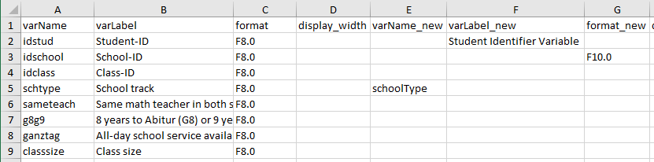
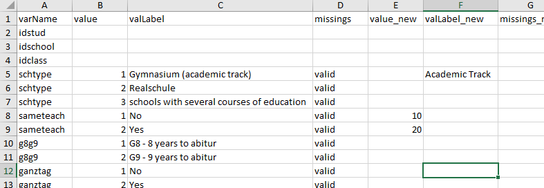

Comprehensive Data Cleaning Guide
Benjamin Becker, Marlen Holtmann, Johanna Busse
2024-08-02
Source:vignettes/data_cleaning.Rmd
data_cleaning.RmdeatGADS allows importing data from SPSS
files basically without any loss of data or meta data.
eatGADS stores these data and meta data in so-called
GADSdat objects. These objects are lists of length two,
containing both the data ("dat") as well as the meta data
("labels").
As GADSdat objects have this specific structure,
conventional data modification tools are not suitable for
GADSdat objects. Instead, eatGADS provides
designated data cleaning and data wrangling functions for most common
data cleaning and data wrangling tasks. This is especially relevant for
data cleaning steps that require simultaneous modification of both the
data and the meta data (e.g., recoding of values and value labels).
In this vignette
- the structure of
GADSdatobjects is illustrated and - common data cleaning and data wrangling are explained.
For illustrative purposes, a small example data set from the campus
files of the German PISA Plus assessment (called pisa) is
used. The complete campus files and the original data set can be
accessed here
and here.
Data structure
The raw data in a GADSdat object are represented as raw,
unlabeled values. They can be accessed via GADSdat$dat. For
the extraction of data suitable for data analyses, see the
extractData2() function.
pisa$dat[1:5, 1:5]
#> idstud idschool idclass schtype sameteach
#> 1 1 127 392 2 2
#> 2 2 65 201 3 1
#> 3 3 10 34 1 1
#> 4 4 103 319 3 2
#> 5 5 57 179 2 2Meta data structure
Meta data are stored in a GADSdat object with the
following structure:
#> varName varLabel format display_width labeled value valLabel missings
#> 17 gender Gender F8.0 NA yes 1 Female valid
#> 18 gender Gender F8.0 NA yes 2 Male valid-
varLabel: a variable label; describes a variable in the data -
format: theSPSSformat of a variable;Frepresents numeric,Arepresents character variables -
display_width: the display width of a variable in theSPSSformat -
labeled: does the variable contain value labels or missing tags?
On value level, additional meta data can be stored, namely:
-
valLabel: value labels; labels describing, what a certain value on a certain variable represents -
missings: missing tags (sometimes also referred to as missing codes) indicating whether a certain value represents a valid ("valid") or a missing ("miss") value
Via the function extractMeta() the existing meta data of
one, several or all variables in a GADSdat object can be
inspected. This function is used frequently throughout the vignette to
check whether changes to meta data have been performed successfully.
extractMeta(gads, vars = c("hisei", "schtype"))
#> varName varLabel format display_width labeled value
#> 5 schtype School track F8.0 NA yes 1
#> 6 schtype School track F8.0 NA yes 2
#> 7 schtype School track F8.0 NA yes 3
#> 39 hisei Highest parental occupational status F8.2 NA no NA
#> valLabel missings
#> 5 Gymnasium (academic track) valid
#> 6 Realschule valid
#> 7 schools with several courses of education valid
#> 39 <NA> <NA>Modifying meta data
This section discusses changes on meta data level, such as changes to variable names or labels.
Changing variable names
Changes to meta data on variable level are straightforward. Variable
names can be changed with the changeVarNames() function.
The old variable names are overwritten. Multiple variable names can be
adjusted at once.
# inspect original meta data
extractMeta(gads, vars = "hisei")
#> varName varLabel format display_width labeled value valLabel
#> 39 hisei Highest parental occupational status F8.2 NA no NA <NA>
#> missings
#> 39 <NA>
# Change variable name
gads_labeled <- changeVarNames(GADSdat = gads, oldNames = "hisei", newNames = "hisei_new")
# inspect modified meta data
extractMeta(gads_labeled, vars = "hisei_new")
#> varName varLabel format display_width labeled value valLabel
#> 39 hisei_new Highest parental occupational status F8.2 NA no NA <NA>
#> missings
#> 39 <NA>Changing variable labels
Variable labels can be adjusted analogously via the
changeVarLabels() function. Again, multiple variable labels
can be adjusted at once.
extractMeta(gads_labeled, vars = "hisei_new")
#> varName varLabel format display_width labeled value valLabel
#> 39 hisei_new Highest parental occupational status F8.2 NA no NA <NA>
#> missings
#> 39 <NA>
# Change variable label
gads_labeled <- changeVarLabels(GADSdat = gads_labeled, varName = "hisei_new",
varLabel = "Parental occupational status (highest)")
extractMeta(gads_labeled, vars = "hisei_new")
#> varName varLabel format display_width labeled value valLabel
#> 39 hisei_new Parental occupational status (highest) F8.2 NA no NA <NA>
#> missings
#> 39 <NA>Changing SPSS format
The same applies for the SPSS format of a variable using
the changeSPSSformat() function.
extractMeta(gads_labeled, "hisei_new")
#> varName varLabel format display_width labeled value valLabel
#> 39 hisei_new Parental occupational status (highest) F8.2 NA no NA <NA>
#> missings
#> 39 <NA>
# Change SPSS format
gads_labeled <- changeSPSSformat(GADSdat = gads_labeled, varName = "hisei_new",
format = "F10.2")
extractMeta(gads_labeled, "hisei_new")
#> varName varLabel format display_width labeled value valLabel
#> 39 hisei_new Parental occupational status (highest) F10.2 NA no NA <NA>
#> missings
#> 39 <NA>Changing value labels
Changes to meta data on value level follow the same principle. With
the changeValLabels() function, value labels can be added
or modified. Note that value labels and missing codes should be given to
numeric values, even if a variable is a character variable.
# Adding value labels
extractMeta(gads_labeled, "hisei_new")
#> varName varLabel format display_width labeled value valLabel
#> 39 hisei_new Parental occupational status (highest) F10.2 NA no NA <NA>
#> missings
#> 39 <NA>
gads_labeled <- changeValLabels(GADSdat = gads_labeled, varName = "hisei_new",
value = c(-94, -99), valLabel = c("miss1", "miss2"))
extractMeta(gads_labeled, "hisei_new")
#> varName varLabel format display_width labeled value valLabel
#> 38 hisei_new Parental occupational status (highest) F10.2 NA yes -99 miss2
#> 39 hisei_new Parental occupational status (highest) F10.2 NA yes -94 miss1
#> missings
#> 38 valid
#> 39 valid
# Changing value labels
gads_labeled <- changeValLabels(GADSdat = gads_labeled, varName = "hisei_new",
value = c(-94, -99),
valLabel = c("missing: Question omitted",
"missing: Not administered"))
extractMeta(gads_labeled, "hisei_new")
#> varName varLabel format display_width labeled value
#> 38 hisei_new Parental occupational status (highest) F10.2 NA yes -99
#> 39 hisei_new Parental occupational status (highest) F10.2 NA yes -94
#> valLabel missings
#> 38 missing: Not administered valid
#> 39 missing: Question omitted validRemoving value labels
Value labels can be deleted using the removeValLabels()
function.
# Removing value labels
extractMeta(gads_labeled, "schtype")
#> varName varLabel format display_width labeled value valLabel
#> 4 schtype School track F8.0 NA yes 1 Gymnasium (academic track)
#> 5 schtype School track F8.0 NA yes 2 Realschule
#> 6 schtype School track F8.0 NA yes 3 schools with several courses of education
#> missings
#> 4 valid
#> 5 valid
#> 6 valid
gads_labeled <- removeValLabels(GADSdat = gads_labeled, varName = "schtype",
value = 1:3)
extractMeta(gads_labeled, "schtype")
#> varName varLabel format display_width labeled value valLabel missings
#> 4 schtype School track F8.0 NA no NA <NA> <NA>Changing missing tags
Missing tags (sometimes also referred to as missing codes) can be
modified using the changeMissings() function. Valid entries
for missings are "miss" and
"valid".
# Defining missings
extractMeta(gads_labeled, "hisei_new")
#> varName varLabel format display_width labeled value
#> 38 hisei_new Parental occupational status (highest) F10.2 NA yes -99
#> 39 hisei_new Parental occupational status (highest) F10.2 NA yes -94
#> valLabel missings
#> 38 missing: Not administered valid
#> 39 missing: Question omitted valid
gads_labeled <- changeMissings(GADSdat = gads_labeled, varName = "hisei_new",
value = c(-94, -99), missings = c("miss", "miss"))
extractMeta(gads_labeled, "hisei_new")
#> varName varLabel format display_width labeled value
#> 36 hisei_new Parental occupational status (highest) F10.2 NA yes -99
#> 37 hisei_new Parental occupational status (highest) F10.2 NA yes -94
#> valLabel missings
#> 36 missing: Not administered miss
#> 37 missing: Question omitted missChecking and adjusting missing tags and value labels
Usually an alignment of value labels and missing codes is desirable.
For example, in the variable hisei_new the value
-94 has received a missing tag and the value label
"missing: Questions omitted". To make these alignments
easier, the functions checkMissings() and
checkMissingsByValues() exist. checkMissings()
allows searching for regular expressions in the value labels and
comparing missing tags and vice versa. Per default, missing codes are
automatically adjusted (addMissingCode = TRUE) and value
label mismatches just reported (addMissingLabel = FALSE).
checkMissingsByValues() allows searching for labeled values
in a specific value range (e.g., -50:-99).
# Creating a new value label for a missing value but leaving the missing code as valid
gads_labeled <- changeValLabels(GADSdat = gads_labeled, varName = "gender",
value = -94, valLabel = "missing: Question omitted")
# Creating a new missing code but leaving the value label empty
gads_labeled <- changeMissings(GADSdat = gads_labeled, varName = "gender",
value = -99, missings = "miss")
# Checking value label and missing code alignment
gads_labeled2 <- checkMissings(gads_labeled, missingLabel = "missing")
#> The following variables have value labels including the term 'missing' which are not coded as missing:
#> gender
#> 'miss' is inserted into column missings for 1 rows.
#> The following variables have values coded as missings but value labels do not include the term 'missing':
#> gender
# Checking missing tags for a certain value range
gads_labeled <- checkMissingsByValues(gads_labeled, missingValues = -50:-99)
#> The following variables have values in the 'missingValues' range which are not coded as missing:
#> gender
#> 'miss' is inserted into column missings for 1 rows.Reusing meta data
Sometimes one variable already contains the meta data which should be
added to another variable. reuseMeta() can copy meta data
from one variable (other_varName) to another variable
(varName), even across different data sets. The function
allows us to transfer the complete meta data, only value labels or a
specific selection of value labels (only valid values or missing codes).
In the example below we transfer only the missing codes from variable
hisei_new to variable age.
extractMeta(gads_labeled, "age")
#> varName varLabel format display_width labeled value valLabel missings
#> 18 age Age of student at T1 F8.2 NA no NA <NA> <NA>
gads_labeled <- reuseMeta(GADSdat = gads_labeled, varName = "age",
other_GADSdat = gads_labeled, other_varName = "hisei_new",
missingLabels = "only", addValueLabels = TRUE)
extractMeta(gads_labeled, "age")
#> varName varLabel format display_width labeled value valLabel
#> 18 age Age of student at T1 F8.2 NA yes -99 missing: Not administered
#> 19 age Age of student at T1 F8.2 NA yes -94 missing: Question omitted
#> missings
#> 18 miss
#> 19 missAdding and removing variables
In GADSdat objects, meta data is stored alongside with
the actual data set. Therefore, changes to the actual data often imply
changes to the meta data. If a variable is removed from the data set,
its meta data is no longer needed. If a new variable is created, new
meta data needs to be created. If a variable is recoded, the meta data
entries need to be recoded accordingly.
Selecting or removing variables
If a certain subset of variables in the GADSdat is
needed, individual variables can either be extracted via
extractVars() or removed via removeVars().
# Selecting variables
gads_motint <- extractVars(gads_labeled,
vars = c("int_a", "int_b", "int_c", "int_d", "instmot_a"))
#> Removing the following rows from meta data: idstud, idschool, idclass, schtype, sameteach, g8g9, ganztag, classsize, repeated, gender, age, language, migration, hisced, hisei_new, homepos, books, pared, computer_age, internet_age, int_use_a, int_use_b, truancy_a, truancy_b, truancy_c, instmot_b, instmot_c, instmot_d, norms_a, norms_b, norms_c, norms_d, norms_e, norms_f, anxiety_a, anxiety_b, anxiety_c, anxiety_d, anxiety_e, selfcon_a, selfcon_b, selfcon_c, selfcon_d, selfcon_e, worketh_a, worketh_b, worketh_c, worketh_d, worketh_e, worketh_f, worketh_g, worketh_h, worketh_i, intent_a, intent_b, intent_c, intent_d, intent_e, behav_a, behav_b, behav_c, behav_d, behav_e, behav_f, behav_g, behav_h, teach_a, teach_b, teach_c, teach_d, teach_e, cognact_a, cognact_b, cognact_c, cognact_d, cognact_e, cognact_f, cognact_g, cognact_h, cognact_i, discpline_a, discpline_b, discpline_c, discpline_d, discpline_e, relation_a, relation_b, relation_c, relation_d, relation_e, belong_a, belong_b, belong_c, belong_d, belong_e, belong_f, belong_g, belong_h, belong_i, attitud_a, attitud_b, attitud_c, attitud_d, attitud_e, attitud_f, attitud_g, attitud_h, grade_de, grade_ma, grade_bio, grade_che, grade_phy, grade_sci, ma_pv1, ma_pv2, ma_pv3, ma_pv4, ma_pv5, rea_pv1, rea_pv2, rea_pv3, rea_pv4, rea_pv5, sci_pv1, sci_pv2, sci_pv3, sci_pv4, sci_pv5
#> No rows added to meta data.
namesGADS(gads_motint)
#> [1] "int_a" "int_b" "int_c" "int_d" "instmot_a"
gads_int <- removeVars(gads_motint, vars = "instmot_a")
#> Removing the following rows from meta data: instmot_a
#> No rows added to meta data.
namesGADS(gads_int)
#> [1] "int_a" "int_b" "int_c" "int_d"Cloning a variable
A variable can be cloned using the cloneVariable()
function. Both the data and meta data are cloned. This function can be
helpful if a modified copy of a variable should be created. For this
purpose, the variable can be cloned and later modified (e.g., via
recodeGADS).
# Clone the variable "sameteach"
gads_labeled <- cloneVariable(gads_labeled, varName = "sameteach", new_varName = "sameteach2")Adding variables
Adding variables to a GADSdat object is unfortunately
not straight forward and requires utilizing the underlying object
structure. For adding variables, the dat object needs to be
abstracted, so that new variables can be added to it. Afterwards, the
meta data needs to be added using the updateMeta()
function.
# Extract the data
newDat <- gads_labeled$dat
# Adding a variable
newDat$classsize_kat <- ifelse(newDat$classsize > 15,
yes = "big", no = "small")
# Updating meta data
gads_labeled2 <- updateMeta(gads_labeled, newDat = newDat)
#> No rows removed from meta data.
#> Adding meta data for the following variables: classsize_kat
extractMeta(gads_labeled2, "classsize_kat")
#> varName varLabel format display_width labeled value valLabel missings
#> classsize_kat classsize_kat <NA> <NA> NA no NA <NA> <NA>Recoding
eatGADS provides functionality for the manual and
semi-automatic recoding of variables.
Removing all values from a variable
For instance for the purpose of ensuring the anonymity of person in a
data set, it is sometimes desirable to empty sensitive variables. This
can be performed using the emptyTheseVariables()
function.
# Empty a variable completely
gads_labeled <- emptyTheseVariables(gads_labeled, vars = "idschool")
# Resulting frequency table
table(gads_labeled$dat$idschool, useNA = "ifany")
#>
#> <NA>
#> 500Manual recoding
The function recodeGADS() allows the manual recoding of
a variable.
# Original data and meta data
gads_labeled$dat$gender[1:10]
#> [1] 1 1 2 2 1 1 2 2 1 1
extractMeta(gads_labeled, "gender")
#> varName varLabel format display_width labeled value valLabel missings
#> 14 gender Gender F8.0 NA yes -99 <NA> miss
#> 15 gender Gender F8.0 NA yes -94 missing: Question omitted miss
#> 16 gender Gender F8.0 NA yes 1 Female valid
#> 17 gender Gender F8.0 NA yes 2 Male valid
# Recoding
gads_labeled <- recodeGADS(GADSdat = gads_labeled, varName = "gender",
oldValues = c(1, 2), newValues = c(10, 20))
# New data and meta data
gads_labeled$dat$gender[1:10]
#> [1] 10 10 20 20 10 10 20 20 10 10
extractMeta(gads_labeled, "gender")
#> varName varLabel format display_width labeled value valLabel missings
#> 14 gender Gender F8.0 NA yes -99 <NA> miss
#> 15 gender Gender F8.0 NA yes -94 missing: Question omitted miss
#> 16 gender Gender F8.0 NA yes 10 Female valid
#> 17 gender Gender F8.0 NA yes 20 Male validMoreover, recodeGADS() allows recoding values without
value labels or even NA values.
# Recoding of NA values
gads_labeled$dat$int_a[1:10]
#> [1] 2 2 3 2 1 2 NA NA NA NA
gads_labeled <- recodeGADS(GADSdat = gads_labeled, varName = "int_a",
oldValues = NA, newValues = -94)
gads_labeled$dat$int_a[1:10]
#> [1] 2 2 3 2 1 2 -94 -94 -94 -94Setting values to NA
For recoding specific values into NA values, the
function recode2NA() exists. It allows recoding a specific
value across multiple variables (while recodeGADS() allows
recoding multiple values for a single variable). Existing value labels
for the specified values are deleted. For each variable it is reported
how many cases have been recoded.
# Recoding of values as Missing/NA
gads_labeled$dat$schtype[1:10]
#> [1] 2 3 1 3 2 3 1 3 2 1
gads_labeled <- recode2NA(gads_labeled, recodeVars = c("hisei_new", "schtype"),
value = "3")
#> Recodes in variable hisei_new: 0
#> Recodes in variable schtype: 111
gads_labeled$dat$schtype[1:10]
#> [1] 2 NA 1 NA 2 NA 1 NA 2 1Automatically recoding a character variable to a labeled numeric variable
A character variable can be automatically recoded into a labeled
numeric variable via multiChar2fac().
# Example data set
test_df <- data.frame(id = 1:5, varChar = c("german", "English",
"english", "POLISH", "polish"),
stringsAsFactors = FALSE)
test_gads <- import_DF(test_df)
# Recoding a character variable to numeric
test_gads2 <- multiChar2fac(test_gads, vars = "varChar", var_suffix = "_new")
extractMeta(test_gads2, "varChar_new")
#> varName varLabel format display_width labeled value valLabel missings
#> 3 varChar_new (recoded) F10.0 NA yes 1 english valid
#> 4 varChar_new (recoded) F10.0 NA yes 2 English valid
#> 5 varChar_new (recoded) F10.0 NA yes 3 german valid
#> 6 varChar_new (recoded) F10.0 NA yes 4 polish valid
#> 7 varChar_new (recoded) F10.0 NA yes 5 POLISH validVia the argument convertCase upper and lower case can be
automatically adjusted.
# Recoding a character variable to numeric while simplying case
test_gads2 <- multiChar2fac(test_gads, vars = "varChar", var_suffix = "_new",
convertCase = "upperFirst")
extractMeta(test_gads2, "varChar_new")
#> varName varLabel format display_width labeled value valLabel missings
#> 3 varChar_new (recoded) F10.0 NA yes 1 English valid
#> 4 varChar_new (recoded) F10.0 NA yes 2 German valid
#> 5 varChar_new (recoded) F10.0 NA yes 3 Polish validAutomatically recoding a variable with a template
A variable can be automatically recoded into a labeled numeric
variable via autoRecode(). This can be desirable, for
instance, for the recoding of identifier variables.
id_df <- data.frame(id = c(1101, 1102, 1103, 1104, 1105),
varChar = c("german", "English", "english", "POLISH", "polish"),
stringsAsFactors = FALSE)
id_gads <- import_DF(id_df)
# Recoding a character variable to numeric
id_gads2 <- autoRecode(id_gads, var = "id", var_suffix = "_new")
id_gads2$dat[, c("id", "id_new")]
#> id id_new
#> 1 1101 1
#> 2 1102 2
#> 3 1103 3
#> 4 1104 4
#> 5 1105 5Variable sorting
The sorting of variables in a GADSdat can be adjusted
for individual variables and for the complete set of variables.
Relocating a specific variable
The function relocateVariable() allows the relocation of
a single variable within a GADSdat object.
namesGADS(gads_labeled)[1:5]
#> [1] "idstud" "idschool" "idclass" "schtype" "sameteach"
# Relocate a single variable within a the data set
gads_labeled <- relocateVariable(GADSdat = gads_labeled, var = "idschool",
after = "schtype")
namesGADS(gads_labeled)[1:5]
#> [1] "idstud" "idclass" "schtype" "idschool" "sameteach"
# Relocate a single variable to the beginning of the data set
gads_labeled <- relocateVariable(GADSdat = gads_labeled, var = "idschool",
after = NULL)
namesGADS(gads_labeled)[1:5]
#> [1] "idschool" "idstud" "idclass" "schtype" "sameteach"Ordering all variables
The function orderLike() allows reordering all variables
within a GADSdat object.
Changing meta data (and data) via an Excel sheet
So far, the introduced functions work well for modifying the meta
data of small data sets or for individual variables. However, we are
frequently interested in modifying the meta data of a larger number of
variables simultaneously. For this purpose eatGADS provides
a workflow that works well with Excel spreadsheets. Thereby changes to
meta data are divided into two levels: the variable and the value
level.
Variable level
We start by extracting this change table via the
getChangeMeta() function.
# variable level
meta_var <- getChangeMeta(GADSdat = pisa, level = "variable")While in principle one could modify the change table directly in R,
it is more convenient to do this in Excel. The change table can be
written to .xlsx via the
eatAnalysis::write_xlsx() function. To perform changes,
entries are made into the corresponding “_new”-columns.
# write to Excel
eatAnalysis::write_xlsx(meta_var, row.names = FALSE, "variable_changes.xlsx")

The Excel file can be read back into R via
readxl::read_xlsx().
# write to Excel
meta_var_changed <- readxl::read_excel("variable_changes.xlsx", col_types = rep("text", 8))The applyChangeMeta() function applies the meta data
changes to the GADSdat object.
gads2 <- applyChangeMeta(meta_var_changed, GADSdat = pisa)
extractMeta(gads2, vars = c("idstud", "idschool", "schoolType"))
#> varName varLabel format display_width labeled value
#> 2 idstud Student Identifier Variable F8.0 NA no NA
#> 3 idschool School-ID F10.0 NA no NA
#> 5 schoolType School track F8.0 NA yes 1
#> 6 schoolType School track F8.0 NA yes 2
#> 7 schoolType School track F8.0 NA yes 3
#> valLabel missings
#> 2 <NA> <NA>
#> 3 <NA> <NA>
#> 5 Gymnasium (academic track) valid
#> 6 Realschule valid
#> 7 schools with several courses of education validValue level
At value level, information on value, value labels or missings can be changed. The general workflow is identical.
# value level
meta_val <- getChangeMeta(GADSdat = pisa, level = "value")
# write to Excel
eatAnalysis::write_xlsx(meta_val, row.names = FALSE, "value_changes.xlsx")

# write to Excel
meta_val_changed <- readxl::read_excel("value_changes.xlsx",
col_types = c("text", rep(c("numeric", "text", "text"), 2)))
gads3 <- applyChangeMeta(meta_val_changed, GADSdat = pisa)
extractMeta(gads3, vars = c("schtype", "sameteach"))
#> varName varLabel format display_width labeled value
#> 4 schtype School track F8.0 NA yes 1
#> 5 schtype School track F8.0 NA yes 2
#> 6 schtype School track F8.0 NA yes 3
#> 7 sameteach Same math teacher in both school years F8.0 NA yes 10
#> 8 sameteach Same math teacher in both school years F8.0 NA yes 20
#> valLabel missings
#> 4 Acamedic Track valid
#> 5 Realschule valid
#> 6 schools with several courses of education valid
#> 7 No valid
#> 8 Yes valid